Atlanta-based Focus Brands Inc. is a franchiser and manager of many popular food service brands like Moe’s, Auntie Anne’s, Cinnabon etc. Each of these brands curate their research independently, as well as in association with Focus Brands, using myriad of tools, platforms and services.
Difficulty in searching
Redundant research artifacts
However, this distributed structure makes it difficult to define and enforce a singular process, or toolset, for managingaccessing internal research collections, leading to problemslike:
Lack of organization
Lack of collaboration, communication & sharing
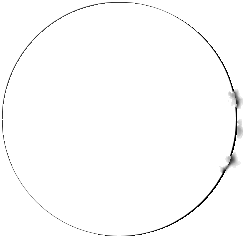
For this, Focus Brands partnered with Georgia Tech’s HCI program to re- envision their internal knowledge management system, from ground up
Identifying potential methods of consolidating research artifacts acrossthe company into a single repository that is sharable, accessible andevident for potential business decisions.
It was aimed at
We evaluated the status quo of different researchrepositories housed in Focus Brands to find gaps inharvest, consumption, organization and communication ofresearch artifacts.
Once the gaps were identified, we designed differentextensions for their current platforms to bridge these. Theaim was to enhance users’ productivity, while keeping thelearning curve of adapting to a new platform gradual.
Research
Harvest
Communication
Organization
Consumption
PROCESS
Research
Analyze
Design
Ideate
Test
Task-based User Testing Usability Testing (SUS) NASA TLX Learnability assessment Prototype Refinement
Narrative walkthrough Storyboarding Brainstorming Idea synthesis Designed alternatives
Concept Sketching Paper prototype Wireframes User flowsSystem designInteractive prototype
Task Analysis Affinity mapping Empathy Mapping User Persona
Secondary research Open Interviews Semi-structuredInterviewsRemote Observation Cognitive Walkthrough
ROLE
& Analysis
Conducted secondary research, open& semi-structured user interviews andcognitive walkthrough. Performed Taskanalysis, Affinity Maps and Empathymaps
Research
Brainstormed different designalternatives, developed narrativewalkthrough, conceptualized thealternatives
Ideate
Sketched concepts, made paperprototypes and developed wireframes.Conducted user studies for designfeedback and refined wireframes intointeractive prototype for the MicrosoftSharepoint based plug-ins for
Conducted task based usabilitytesting sessions, along withthink-aloud technique. Refinedconcept design feedback.
Design
Test
Problem Space
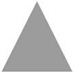
The current users of the research infrastructure at Focus Brands is a large, mixed population that includes brand managers, marketing directors, customer analytics teams, and many others.
Teams at Focus Brands vary in their approach towards research storagethrough the usage of different tools, folder structures, and namingconvention. This variance in approach has made the process of findingrelevant research artifacts across the company difficult, as it often requires alot of intuition in folder navigation, keyword searching, and word-of-mouthinvestigation.
For this, there is a need for a centralized repository and a standardized procedure for managing research artifacts
Provide a single access point for research
Allow for faster and more efficient data gathering
Increased project turnover
Reduce the risk of losingartifacts when employeesleave the company.
A centralized repository & standardized interface would
resulting into
Lower redundant research
Streamline the process forfinding & accessing relevantresearch
Improved employee efficiency
Reduce the need to keepresearch in impermanentplaces like personal email.
Our Solution
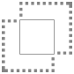
We originally considered the idea of introducing a brand new centralized system for managing research artifacts. However, as our
need to work with multitude of tools. Our solution would be a mere add-on.
Hence, we decided to retrofit our designs into their existing system as “add-ons” or “plugins”
For this research project, we developedadd-ons for Microsoft Sharepoint
because of:
highly customizable interface
support for 3rd party plugins
familiraity at Focus Brands
Disclaimer
The images used here are purely for informational purposes and their contents do not represent any actual Focus Brands system, data or personnel information
We designed plug-ins for 4 user flows
File Adding & Metadata Tagging
In order to ensure that all files and folders are accessible by the search and organization functionalities, it is required that all items are tagged appropriately when added to the file-sharing platform.
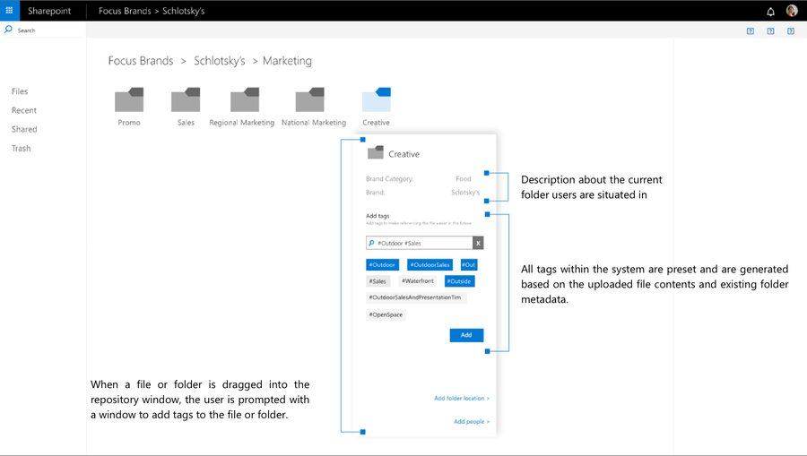
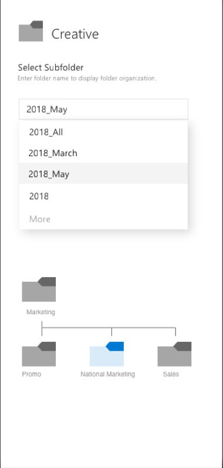
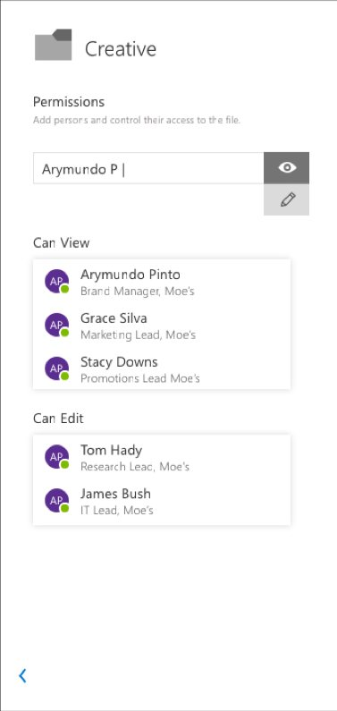
Users can annotate each new file or folder with additional metadata options as shown in the images here
Select Subfolder
Permissions
This window allows the user todirectly place the new file intoan appropriate subfolder withinthe folder hierarchy.
The user can choose thepeople who have access to theadded file and set the accesspermissions for them as well.
Searching (with advanced options)
This flow allowed users to search for files effectively, preview the contents before opening, view information about people who can access the file and share it with others as well.
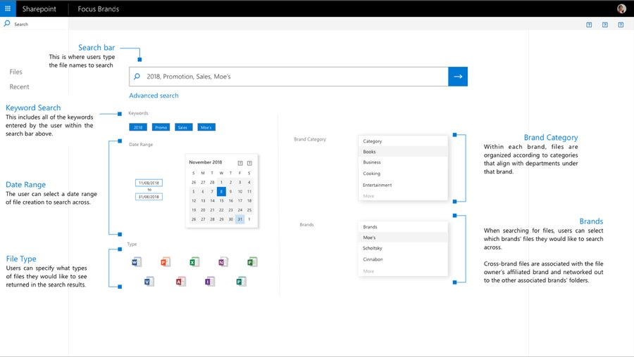
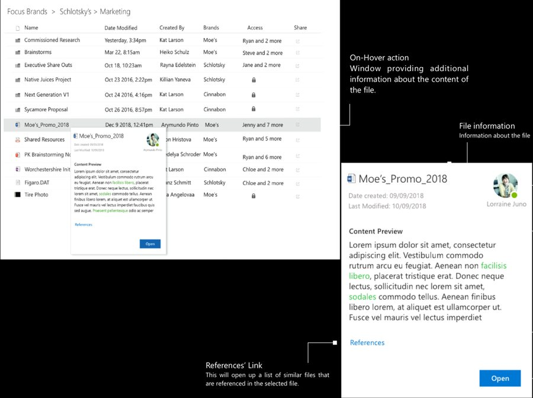
Content Preview functionality provides a quick overview of the contents ofthe file or folder so that users don’t have to open them every time tounderstand the context of the artifact.
File owner Information about who owns the file, i.e., who the file creator is.
Content PreviewProvides asmall sample of the contents ofthe selected file. Any searched keywordsare highlighted to help the user to gaugethe file’s relevance to the user’s needs.
Open
Ppen n the file if relevant
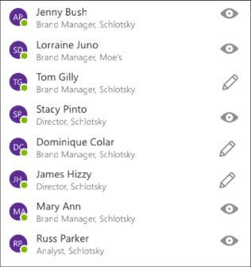
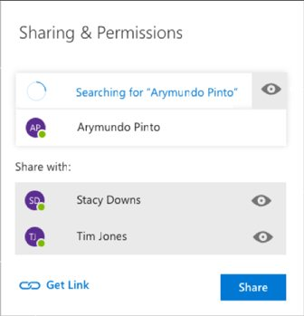
Sharing
Contact Card
Access List This the list of users who have access to the selected file. Clicking on a user within this list will open up that user’s respective contact card.
The contact card displays relevant contactinformation of the selected user, such as theuser’s name, role, and affiliated brand, as wellas the user’s e-mail address and in-office chathandles.
This allows user to share a file from within thislist. They can also choose to create a genericlink, as well as and set the permissions foreach of the users.
Access management
Whenever a user requests access, the owner of the file/folder is notified using the Sharepoint’s in-build notification system (bell iconon top right). The owner can respond to the request from the same notification popup and can choose to either accept or reject therequest. In addition to this, the system will also send email notification based on user’s individual profile and notification settings.
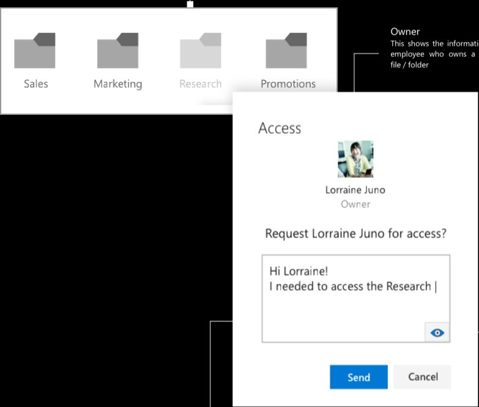
Restricted AccessThe folders that user cannot access willbe visually distinguished from the others to inform user of the restriction.
RequestNoteThere is a social aspect to requestingaccess of an artifact from a person. This is preserved in this feature that allows user to describe the reason behind access request
PermissionUser can specify in theirrequest whatkind of access
will they need for the
particular artifact
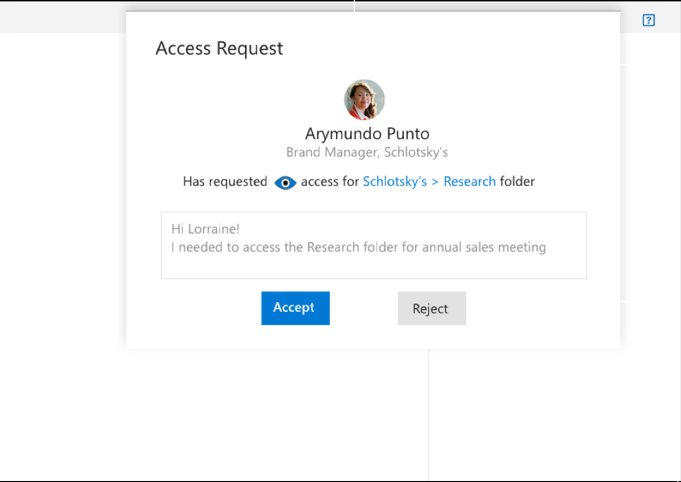
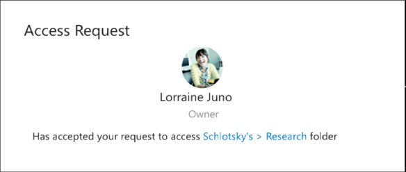
NotificationThe owner/creator of the file receivesa notification when anyone requests access to the file.
Requester’s informationThis shows the requester’s workprofile to give an idea of who has raisedtherequest
Requestee’s viewThis shows the requestee’snotification view, when access has been granted.
This shows relevant information about therequest, including the folder whose access hasbeen requested, the kind of permissionsrequested and the message from the
requester for more context.
Requester’s view This shows the requester’s notification view, when access hasbeengranted.
Auto-organization
This feature provides a way to manage and enforce the organization of files. It analyzes the contents of a folder and recommends a suitable destination for the contents, based on metadata tagging.
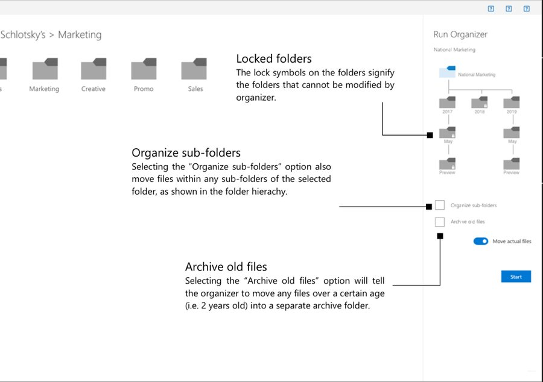
Folder StructureThe organizer displays thehierarchy offolders under the sel elected fol Ider.
y’s
Move actual filesBy default, the organizer will first suggestmovements of files for the user to verify before actually moving the file. Toggling this option on will tell the organizer to move files to their suggested destination without the need for user verification.
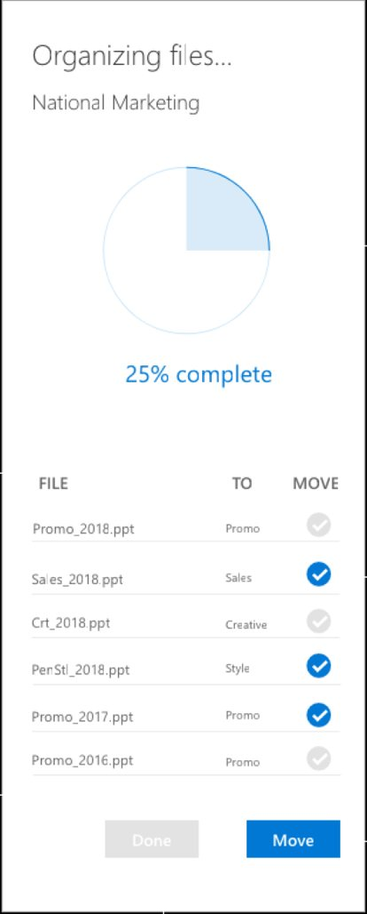
ProgressThe progress ring informsthe user of how much of tha organizer’s task has been completed
ChoosingThe user can verify a suggestedmove by clicking the checkmark icon next to the movement they would like to carry out.
RecommendationsWhen the file organizer is running, if the“Move actual files” option is turned off, the organizer will suggest destinations for files that it believes should be moved based off of comparisons of tags between the file and folders.
Actual MovementOnce the “Move” button is clicked,all selected movements will be carried out while the organizercontinues to suggest additionalmovements to be made.
DoneThis signifies that all movement hasbeen completed and that the user is satisfied with the choices made.
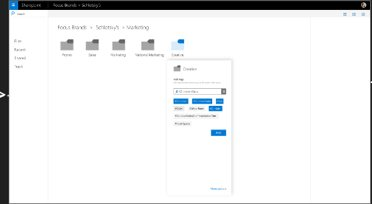
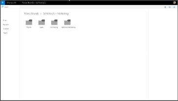
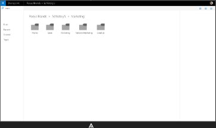
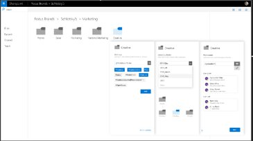
User Flows
File upload & tagging
Adding tags when saving the file
Dropping file into shared space
More Options
File saved
Adding folder tags and people for sharing
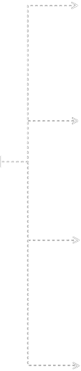
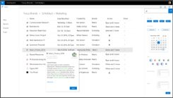
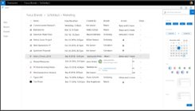
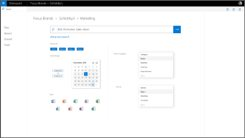
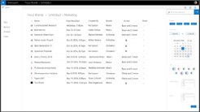
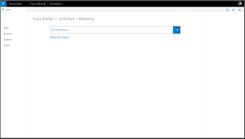
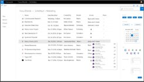
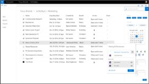
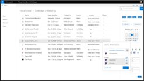
Searching
Content Preview
People’s preview
Advanced Search
Search results, with details
Main Search Page
List of people with access
Sharing options
Changing permissions
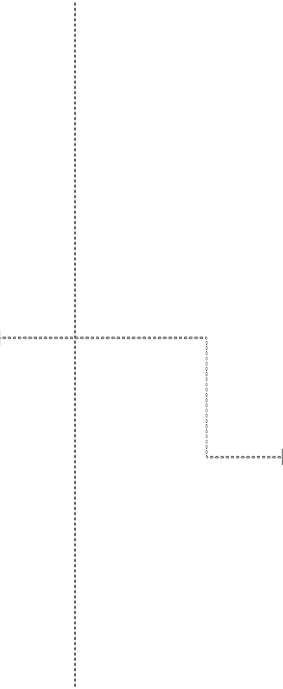
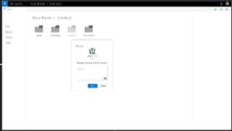
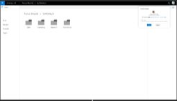
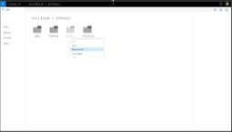
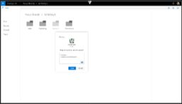
Access request
Request Access dialog box
Owner gets a notification for access request
Notification when request is accepted
Adding a note and access level (view/edit)
User doesn’t have access to Research folder
Owner accepts the request
Request sent
Requestee’s view
Requester’s view
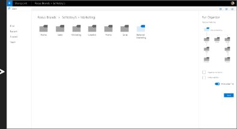
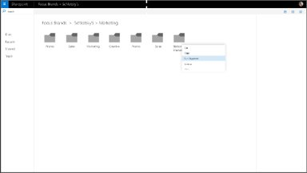
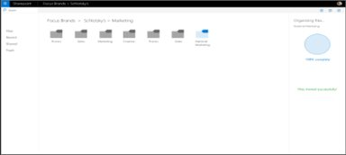
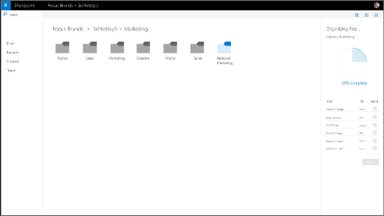
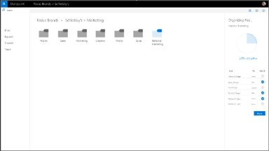
Auto-organization
Choose options when organizing
Success report
Right click action
Organization suggestions
Moving files based on suggestions
Interactive Prototype
Click on the image below for experience
Behind The Curtains
Stage 1: Research
Given that our team is working with an industry partner, the time and access tocompany resources (both people and documentation) was limited. Within theseconstraints, we strived to understand the user context, needs and pain-pointsthrough following
Research Methods
Secondary research
Cognitive Walkthrough
Open ended Interviews
Semi-structured interviews
Remote Observation (With Think Aloud)
Information Goals
Challenges
Goals
Team Structure
What is research?
How people search
How is reseach shared
How is research gathered
How users communicate with one another
Initial themes
Word cloud created from observation and interview notes Generated from https://wordsift.org/
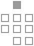
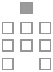
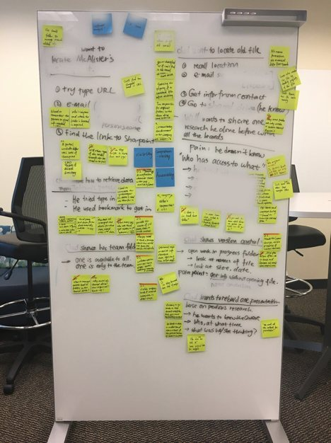
Stage 2: Analysis
Analysis of remote observations
All the information gathered previous phase from the interviews,observations and contextual inquiries was mapped to and analysed usinga number of methods.
Methods
Affinity diagramming
Task Analysis
Empathy mapping
User Personas
Note: Some information was redacted given its sensitive nature
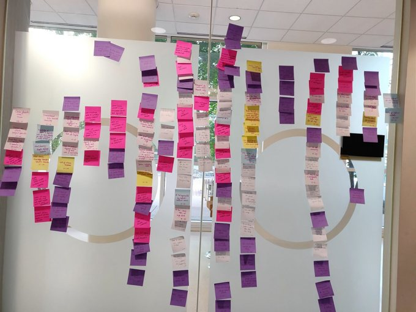
Affinity Diagramming
Given the sheer amount of data collected from hours ofinterviews, remote observations and secondary research by theteam, the affinity diagram provided us with a way to parsethrough it collectively.
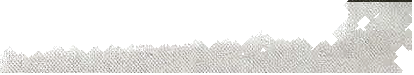
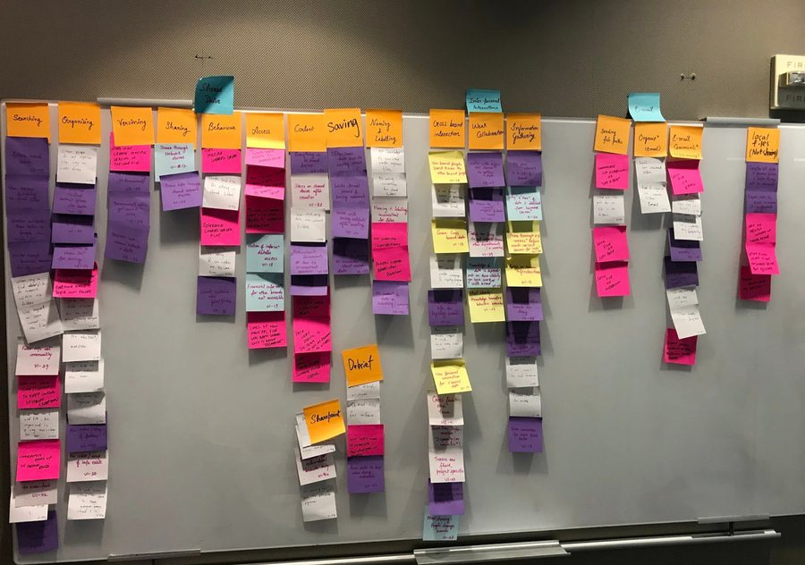
The image below showcases the major areas of focus that emerged during this process
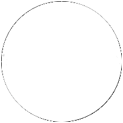
Findings
Shared drives
Content management systems (eg: Sharepoint)
The user group at Focus Brands uses various kinds of tools and platforms to save, access, search and share the research artifacts
Tools & platforms in use
Services like onedrive, dropbox, box etc.
Business Intelligence & CRM Tools
Email
Apart from tools and platforms, we analyzed the different ways in which the user group interacted with the existing research system
Storing Research
Multiple platforms
Inconsistent folder hierarchy, noprotocol for saving, naming andlabelling, lack of process
It is hard for users to keep track of all platforms.
File context
Research Access
Users cannot understand thecontext of a file without goingthrough it
No central way to manage access of resources
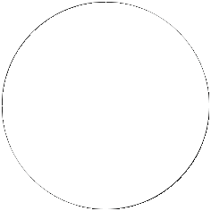
Personal preference
Interpersonal Communication
Some prefer a quick way of storing and saving data in the system, while others take the time to manage and organize.
Users talk to peers to get morecontext about an artifact. This issometimes difficult across brands
Emerging themes
Searching
Sharing
Searching by intuition or asking people.
Users have inconsistent sharing habits.
Archiving
Associated people
Users have different preferenceson where to archive their researchfiles.
There is no clear information on the people associated with
artifacts.
Task Analysis
We performed a hierarchical analysis in to understand the individual steps users take when interacting with the repository.
Hierarchical Task Analysis for creating new research projects
Retrieving the relevant research filesIf location is known, then navigate to the filesStored or saved the files themselves on Sharepoints and Shared driveReceive the path of the files on Sharepoints and Shared drive via emailHave the directly emailed files from othersIf location is unknownGo through folders in different platforms in the research repositoryNavigate through the foldersKeyword searchGuess the locationIf still not able to findAsk relevant people via EmailAsk relevant people in personWorking on research filesAnalyzing research filesEditing existing files for useCreating new filesSharing research files with othersSend out the files via emailUpload to Sharepoint or shared driveChoose which folder is suitable for the filesCreate new folders for the filesUser may choose to email out the path or location of the files to relevantpeopleDo not share, save on personal drive
Empathy Maps
To gain a better understanding of our target users, we translated our interview data into empathy map capturing quotes, thoughts,feelings, and actions of people we interacted with. However, given the diversity of data, we had to go for 2 maps distinguishing betweenpeople who prioritized organization over speed and vice-versa.
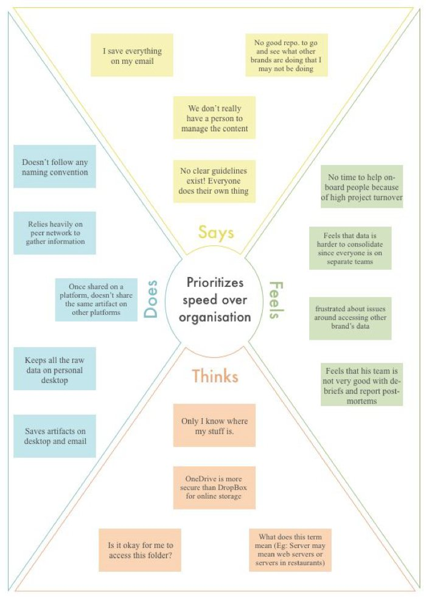
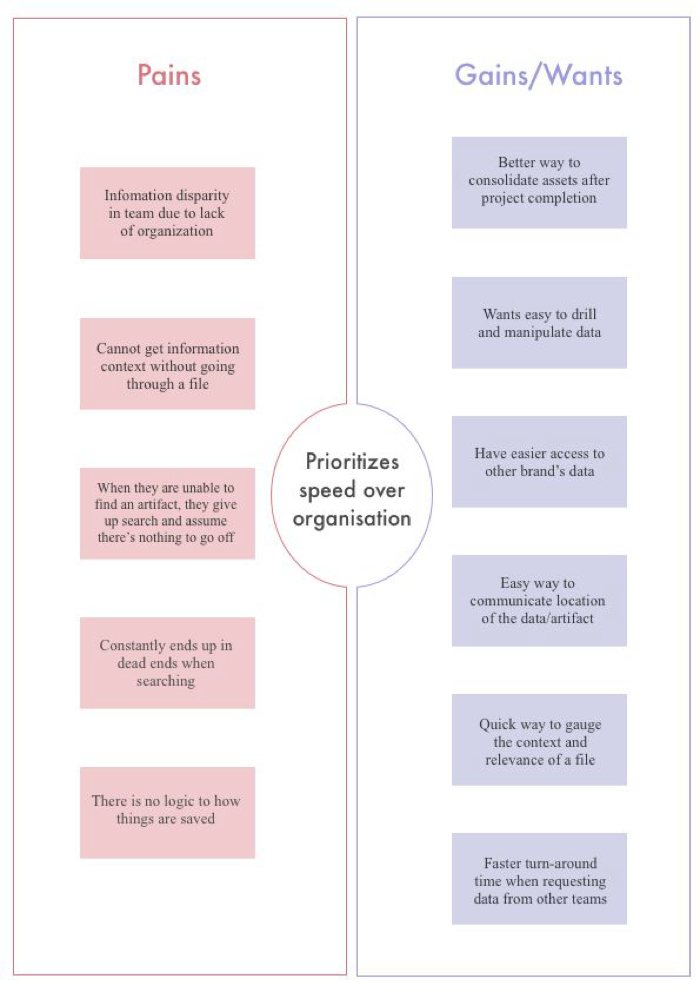
People who prioritize speed over organization
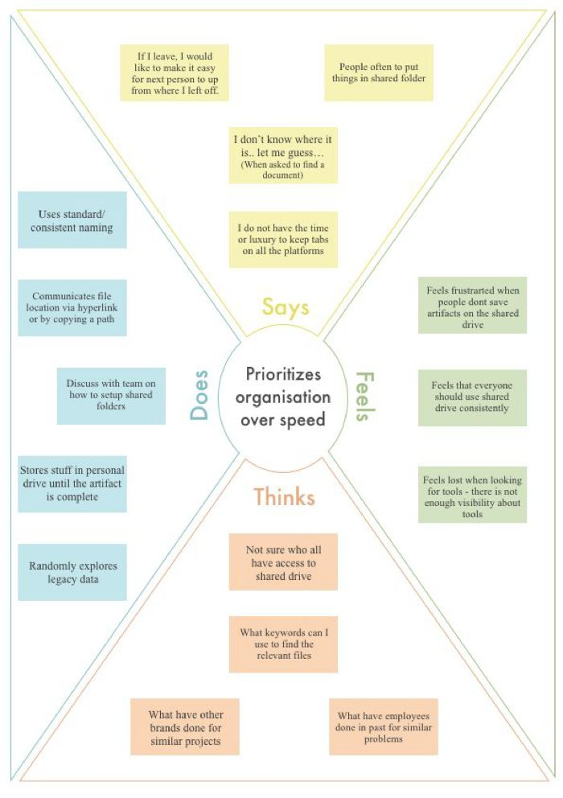
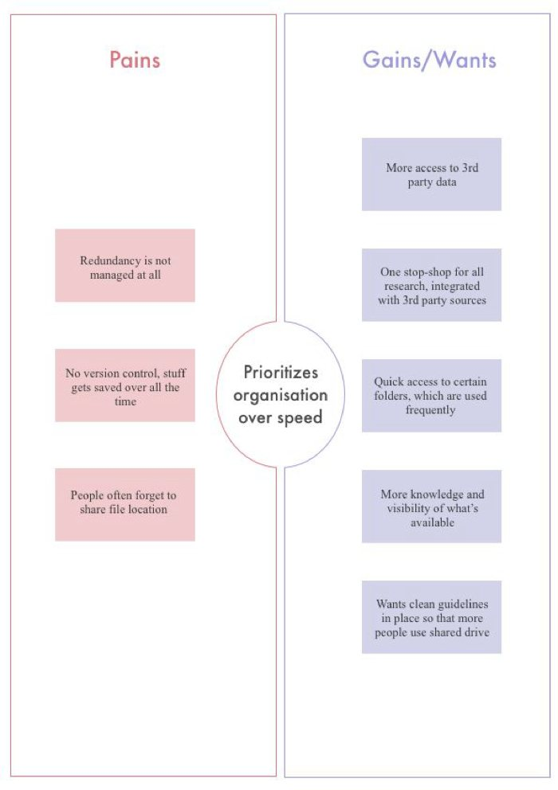
People who prioritize organization over speed
User Personas
The empathy maps helped us derive user personas whch allowed us to step into the shoes of our user group and approach n the problem with their perspective.
User who prioritizes speed over organization
User who prioritizes organization over speed
In addition to the 2 groups identified, we had another group of users which had transitioned to thecompany or to a brand recently. It was difficult to classify them in either of the categories, simply becausetheir pain points arose from a lack of familiarity with the system. So we derive a third persona:
User who is new to a brand
(new employee, or a person who recently switched teams)
Narrative walkthrough
Our users primarily interact with screen based interfaces when using the research repository. To communicate the higher level pain points of this interaction, and provide situational context , we derived a narrative walkthrough of the “day in the life of a new employee”
Source: https://goo.gl/images/Npx7XB
Source: https://goo.gl/images/wG7HBS
Source: https://goo.gl/images/4LfAp6
Roma just joined Focus Brands as anew employee. As part of his firstweek at work, he’s browsing throughhis team’s shared drive.
He comes across a past project undera different brand that he thinks wouldbe relevant to the work he’s doing.Unfortunately, he does not know whoworked on the project.
He decides to email people workingwithin that specific brand, and waitsfor a response.
Source: https://bit.ly/2QtpCnh
Source: https://bit.ly/2se06bU
Source: https://goo.gl/images/11CAkT
He decides to find out more infoabout the file and who created itthrough his personal network withinthe office. This proves more fruitful interms of responses, but nobody hasrecord of who worked on that projectanymore.
Frustrated, he assumes that theperson either no longer works andhence that he can no longer accesstheir research
A week passes, the person he reachedout to still hasn’t responded. It islikely that they are busy with theirown projects and his request is lowpriority
Source: https:/bit.ly/2RgV8u5
He decides go to a third party vendorand buy data that would have beencovered by that file.
DISCLAIMER: All images for the narrative walkthrough were sourced through Google Image searches. Sources have been mentioned at each step.
Stage 3: Ideation
File Tagging
Searching
The analysis of all the data collected presented to us withmultiple sectors for design intervention. We thencollected all of the ideas together and grouped them intomajor themes:
File Access & Sharing
Themes for design intervention
File Organization
Notification for management
All-in-one dashboard
For each of these, we devised concept sketches
Concept sketches
Concept 1: Asset Search
Search results, list view, content preview functionality
Home screen for search
Concept 2: File Access & sharing
File access and contact preview
Easy file sharing
Concept 3: All-in-one dashboard
Analytics on files and folders
Dashboard
Concept 4: Notifications for management
Desktop notification
Mobile notification
Concept 5: File tagging
Adding metadata information like exact location, tags and people while saving the file
Concept 6: File Auto-Organizer
Running the organizer to automate file organization process
We scheduled feedback sessions with Focus Brands employees, which were to be conductedremotely through video conferencing. Utilizing this feedback, we refined our sketches into afirst version of wireframes and click-through prototype, which we used in the second round offeedback sessions with our participants
This process of iterative designing led us torevisit our goal of creating new researchrepository. As we received more and morefeedback, it became clear that, given the varietyof tools ＆ and platforms, users won’t beinclined towards adopting yet another platform.
Additionally we observed that it would beeasier to create add-ons for a platform thatpromotes file-sharing, organization andsearching, as well as, is widely used within thecurrent ecosystem. Hence, we chose to designplug-ins for Microsoft Sharepoint.
Stage 4: Design
Our design was discussed earlier in the 'Solution’ section